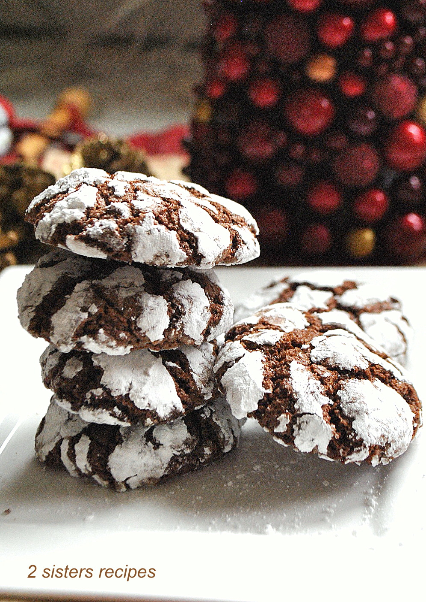

I am sharing you most of my delicious and easy to bake cakes and cookies that your family members, friends and kids would enjoy.
Chocolate Crinkles: A holiday Favo rite
It is also means it's time to make these adorable cookie-friendly favorites: chocolate crinkels.These chocolate crinkles are a holiday staple in winter, but are great any time of the year. Soft,devil's food-like cake-y cookies are rolled around in powdered sugar. when they bake, the dough rises and the chocolate dough peeks out in the little crinkled fissured beneath the white sugar.
Crinkles are easy-peasy to throw together and make a flashy addition to any cookies platter. A warming though: these cooking are so good and chocolaty they may not make the hot cocoa craving go away. In fact, they might just make them worse.

A simple but stunning cake.
A delicious moist chocolate sponge, wrapped in sumptuous Italian merigue buttercream fristing.
The top is flooded with a glossy chocolate ganache and drip. Finished with a selection of seasonal fresh fruits.